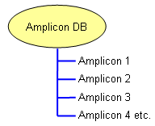

An amplicon database stores information about individual amplicons, which are presented as a simple list based on the name of the amplicon. The primary function of an amplicon database is to provide amplicon sizes during run import. Selection of a amplicon will trigger the Amplicon Editor Window to appear, allow viewing/editing of the information associated with the amplicon.